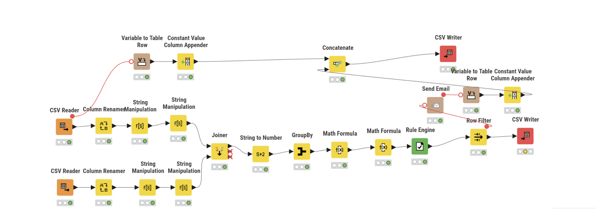

Projets Data
Data Platform · ETL · Power BI · Docker · API REST
TourismeData — Plateforme d'analyse touristique
Projet primé 2026Pipeline ETL complet sur les données touristiques françaises open data. Architecture Docker Compose full-stack : PostgreSQL, ETL Python, API REST Flask, frontend React. Dashboards Power BI et analyse de +21 000 hébergements.
Python
PostgreSQL
Power BI
Docker
Flask API
Voir le projet

Monitoring Stocks & Alerting
Pipeline ETL automatisé. Prévision des ruptures, suivi financier, logs et alertes emails quotidiennes (Batch).
KNIME
Batch Script
SMTP
Voir le projet

Market Intelligence
Pipeline ETL 100% autonome. Scraping, nettoyage et dashboarding Power BI.
Python
SQL
Voir le code

Risque Crédit
Modèle de scoring bancaire (300k clients). 85% de précision prédictive.
Scikit-Learn
Pandas
Voir le projet

Décrochage Scolaire
Machine Learning pour prédire les élèves à risque. Analyse des facteurs sociaux.
Python
ML
Voir le projet

Analyse Olist E-commerce
Analyse de la satisfaction client et KPIs logistiques. Dashboard interactif.
Power BI
Python
SQL
Voir le projet